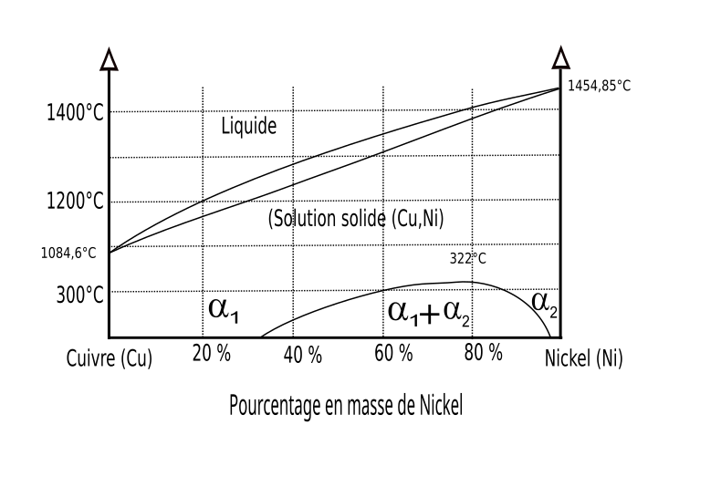

Teaching page 05
Phase Diagrams
Read a phase diagram as a map: temperature and composition locate the state, a tie line finds the phase compositions, and the lever rule finds how much of each phase is present.
Choose a point, name the phases, read the tie-line ends, then calculate the fractions.
Section 1 · One component, three phases
Phase diagram of water
Pressure and temperature determine whether H2O is stable as ice, liquid water, or vapour. The pressure axis is logarithmic so the triple and critical points fit on one chart.
Section 2 · High-temperature isomorphous solidification
Copper–nickel isomorphous diagram
Cu and Ni form an FCC substitutional solid solution across the high-temperature solidification range. The liquidus begins solidification; the solidus marks the last liquid on cooling. A horizontal tie line connects the equilibrium liquid and solid compositions.
Compare with the source Cu–Ni diagram

Quick practice
Convert volume and weight fractions
Density is the bridge between the two bases. Solve for the fraction of phase A; phase B is the remainder.
Show formula hint
From volume: wA = (VAρA) / (VAρA + VBρB)
From weight: VA = (wA/ρA) / (wA/ρA + wB/ρB)
Section 3 · Limited solid solubility
Lead–tin eutectic phase diagram
At 183 °C and 61.9 wt% Sn, liquid transforms isothermally into Pb-rich α and Sn-rich β. Its six B-spline boundaries are traced from a public-domain vector reference and normalized to the teaching landmarks; the invariant line remains exact and horizontal.
Compare with the source Pb–Sn diagram

Cooling through 183 °C
L61.9 → α19.2 + β97.5
Compositions are wt% Sn at the eutectic temperature.
Section 4 · Steels and cast irons
Iron–cementite (Fe–Fe3C) diagram
This metastable Fe–Fe3C diagram uses the supplied invariant and transformation points. Click any region to identify phases, read tie-line compositions, calculate fractions, and reveal a representative micrograph or a schematic for states without one.
- Liquid (L)
- δ ferrite
- Austenite (γ)
- α ferrite
- δ + L
- δ + γ
- γ + L
- L + Fe3C
- α + γ
- γ + Fe3C
- α + Fe3C
- Fe3C boundary
Show the supplied construction points
A repeatable reading routine
Four moves solve most binary-diagram questions
- 01Locate
Plot the overall composition and temperature.
- 02Name
Identify the phase field containing the point.
- 03Connect
Draw a horizontal tie line through a two-phase field.
- 04Balance
Use opposite lever arms to calculate phase fractions.
Data scope and references
Charts are instructional equilibrium approximations, not design data. The Cu–Ni and Pb–Sn phase boundaries are B-spline traces from the credited reusable SVG references, normalized to the numerical landmarks used in this lesson; digitization does not create new measured data. Water landmarks follow NIST/IAPWS values. Pb–Sn uses the 61.9 wt% Sn, 183 °C eutectic and 19.2/97.5 wt% Sn terminal compositions. The Fe–Fe3C construction follows the points supplied for this module and adds the stoichiometric cementite endpoint at 6.67 wt% C.
Images marked AI-generated representative micrograph or AI-generated transformation visualization are synthetic teaching visuals based on metallographic descriptions. They are not measured specimens and should be used only to recognize qualitative morphology. Supplied Fe–C sequence images were centre-cropped to remove AI-drawn scale bars; none of the displayed images supports quantitative feature-size measurement. Procedural schematics remain only where the supplied Fe–C set has no scientifically close state.
NIST water and steam reference · Cu–Ni vector source · Pb–Sn vector source · NIST lead–tin solder reference · Image-generation prompts